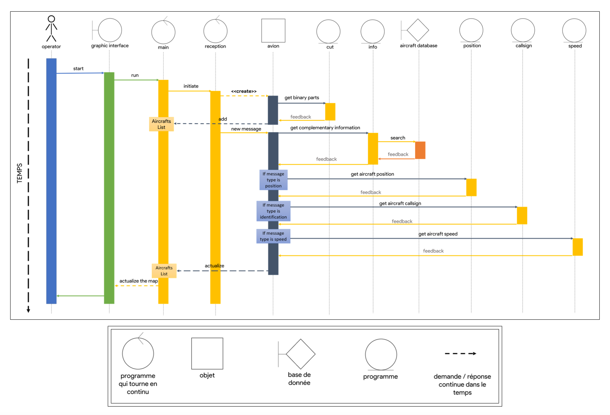

Introduction
L’ADS-B (Automatic Dependent Surveillance-Broadcast) est un système de contrôle du trafic aérien. Un avion utilisant l’ADS-B détermine sa position par un système de positionnement satellite et la renvoit cette dernière (ainsi que d’autres informations sur le vol, altitude, vitesse, modèle de l’avion, etc) dans toutes les directions aux autres appareils disposant de l’ADS-B. Ces messages sont détectables, puis démodulables, par toute personne à l’aide d’une clef TNT (tuner RTL2832U, 15€), utilisée en SDR (Software Defined Radio), qui permet de définir les paramètres de réception, comme par exemple la fréquence, depuis l’ordinateur. L’objectif du projet est d’utiliser ces messages envoyés par les avions, et de proposer une interface graphique à l’utilisateur. Sur cette interface, on souhaite observer en temps réel l’ensemble des avions à portée de notre antenne ; nous souhaitons également pouvoir observer la trajectoire des avions ainsi que connaître les informations sur le vol (altitude, vitesse, moteur, ...).
Description du livrable minimal :
- Intercepter, démoduler, interpréter des signaux ADS-B envoyés par plusieurs avions
- En extraire des informations sur la position, vitesse, modèle,...
- Utiliser ces données pour générer en temps réel une carte sur laquelle figurent les avions
- Possibilité d’obtenir les informations concernant le vol des avions sélectionnés

Exemple de carte recherchée (FlightRadar24)
Description brève :
Ce projet est décomposée en trois parties communicantes les unes avec les autres : Source, Rustracker et TrackUI.
-
Source : c'est le programme chargé d'intercepter les signaux ADS-B émis par les avions à 1090MHz. Il procède ensuite de les démoduler (réception sous forme de I&Qs), de les convertir en binaire et les envoit, grâce au protocole TCP, à Rustracker.
-
Rustracker: c'est le programme principal, stocké sur une machine virtuelle, qui récupère les signaux sous forme binaire émis par Source, les interprète afin d'en extraire les informations sur le vol des avions (position, vitesse, altitude, numéro de vol, etc). Il écrit toutes ces informations dans un fichier geojson qui sera lu par Trackui.
Trackui: il s'agit de l'interface graphique de notre travail, sous forme de page web, herbergée par un serveur nginx sur la machine virtuelle évoquée plus tôt. Elle consulte à intervalles de temps régulier le fichier geojson mis à disposition par Rustracker et affiche les avions en conséquences sur la carte, les autres données concernant les avions sont regroupées dans un tableau à côté de la carte.
Prérequis
Afin de faire fonctionner Source, il est nécessaire de correctement configurer les drivers pour utiliser les antennes RTL-SDR correctement. On propose ici un guide afin d'effectuer correctement les installations nécessaires au bon fonctionnement de Source.
Blacklist des pilotes
Commençons par connecter le dongle TNT à l'ordinateur.
--> La commande dsemg permet de vérifier que le dongle est bien connecté.
Nous allons maintenant blacklister le pilote permettant de regarder la TNT avec le dongle afin qu'il n'interfère pas dans le bon fonctionnement de notre programme.
~ $ cd /etc/modprobe.d
/etc/modprobe.d $ sudo nano rtlsdr.conf
Rajoutons la ligne suivante dans le fichier rtlsdr.conf :
blacklist dvb_usb_rtl28xxu
Sauvegardons ensuite rtlsdr.conf.
--> La commande lsmod permet de vérifier si le pilote est chargé
Enfin, supprimons le pilote déjà chargé.
~ $ blacklist dvb_usb_rtl28xxu
Instalation des pilotes
Commençons par installer la librairie nécessaire à l'utilisation de SoapySDR, la crate que nouis utilisons afin d'utiliser les dongles rtlsdr avec notre code RUST.
sudo apt install libsoapysdr-dev libclang-dev llvm-dev pkg-config
On installe ensuite le pilote correspondant.
sudo apt install soapysdr-module-rtlsdr
Enfin on installe le plugin Soapy pour RTL-SDR.
git clone https://github.com/pothosware/SoapyRTLSDR.git
cd SoapyRTLSDR
mkdir build
cd build
cmake ..
make
sudo make installFormat
The conception can be divided on three greats parts:
- The source aquisition.
- The main code.
- The user interface.

Virtual Machine
Storyline
The original retro planning was:

But over the project difficulties forced us to change the devellopment organization.
During the first meeting, on 27/01/22, the team discuss about the objectives about the project and the reports. The software structure has also been determined that day. We chos the Rust programming language because it's
Conclusion
All the project goals have been completed in time. The software is completely working, the managed to learn a new programming language and to overcom difficulties during the devellopment.
Contributeurs
Les quatre étudiants de Télécom SudParis ayant contribués au projet sont :
Un grand merci à Rémy Grünblatt pour ses conseils et son aide.